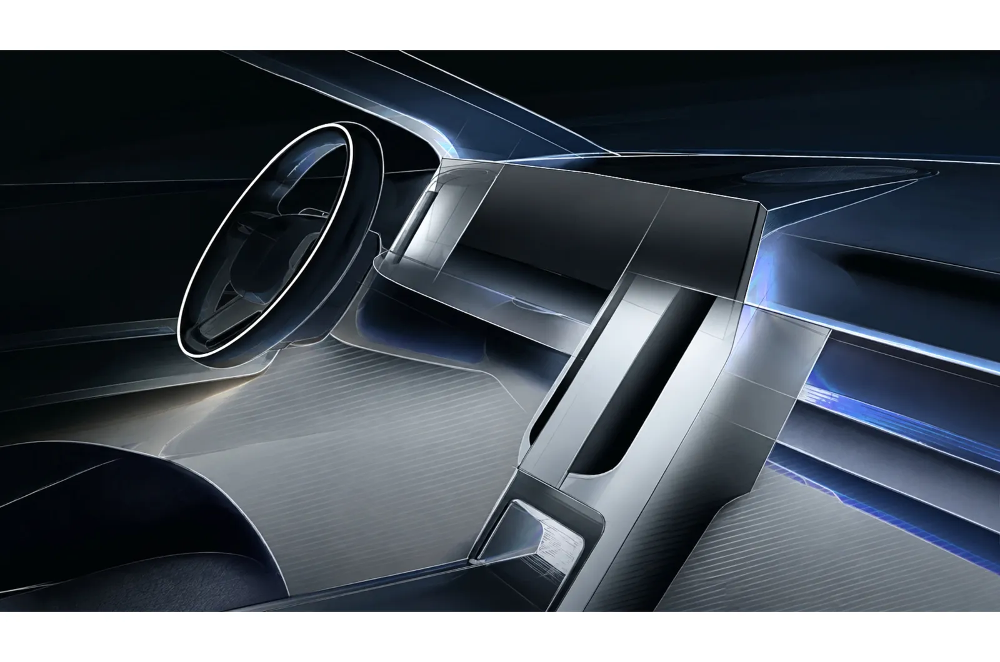
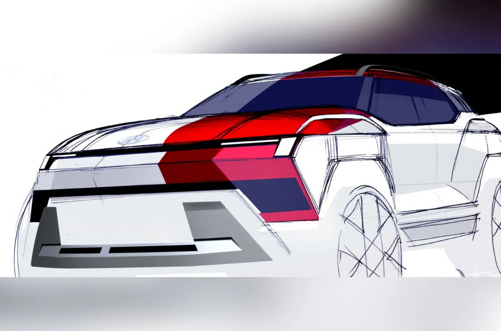
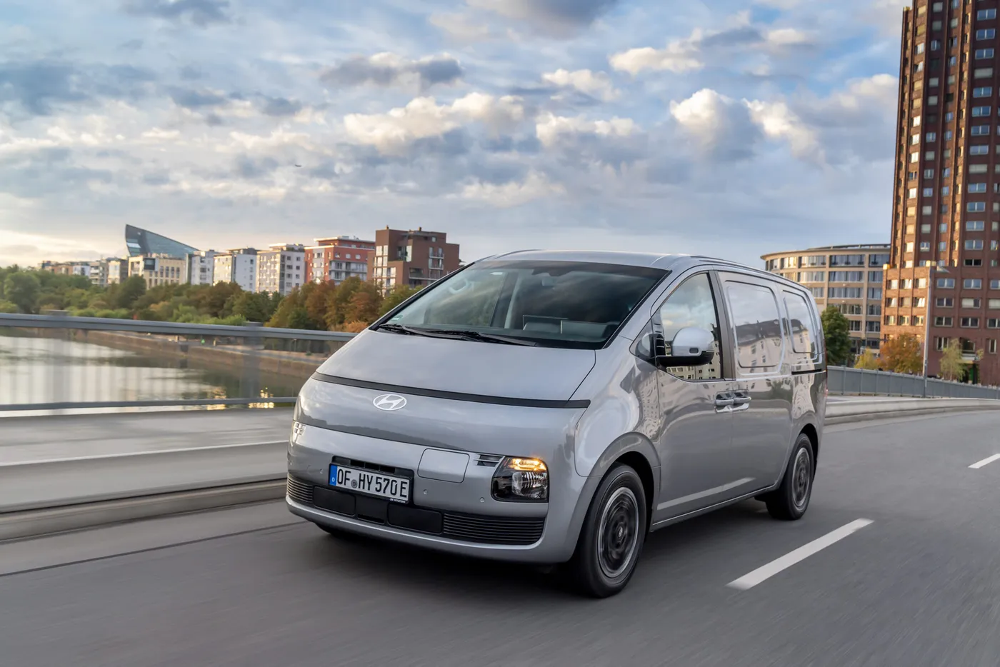
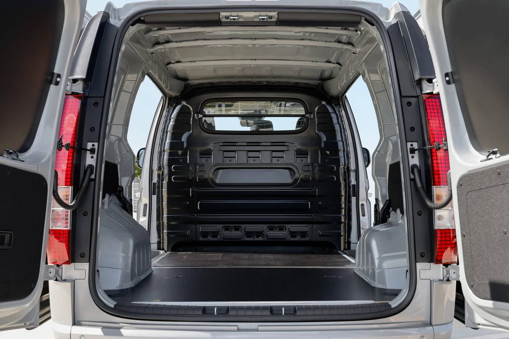
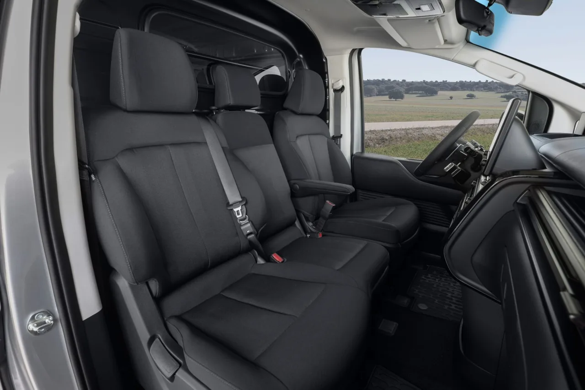

▲ 현대차가 공개한 2세대 바이온 디자인 스케치. 파리모터쇼 월드 프리미어의 B세그 SUV는 바이온일 가능성이 높지만 보도자료에는 이름이 명시되지 않았다 ⓒ 현대자동차
현대차가 파리에서 꺼내는 카드는 세 장이다. 그런데 이 중 한국 소비자가 만날 수 있는 차는 몇 장일까.
현대차는 10월 12일부터 18일까지 열리는 2026 파리모터쇼에서 새로운 B세그먼트 SUV의 월드 프리미어, 새로운 C세그먼트 SUV의 유럽 프리미어, 그리고 브랜드 최초의 전기 경상용차(eLCV)를 공개한다. 현대차 유럽 공식 안내에 따르면 부스는 5.2홀 A12 스탠드, 면적은 1,115㎡다. 이 글은 공식 확인된 사실과 매체 보도, 그리고 기자의 추정을 구분해 정리했다.
1. 현대차가 공식 확인한 내용
공식 문서에서 확인되는 것은 "세그먼트"와 "프리미어 종류"까지다. 현대차 유럽법인은 보도자료에서 신형 B세그 SUV 월드 프리미어, 신형 C세그 SUV 유럽 프리미어, 기존 모델의 파생형 공개, 그리고 eLCV 시장 진출을 알렸다. 하비에르 마르티네 현대차 유럽법인장은 "파리는 우리 제품 라인업의 힘과 방향을 보여줄 적합한 무대"라고 밝혔다.
| 항목 | 내용 | 모델명 공식 명시 |
|---|---|---|
| 월드 프리미어 | 신형 B세그 SUV | 없음 |
| 유럽 프리미어 | 신형 C세그 SUV | 없음 |
| 파생 모델 | 핵심 신모델에 스포티 디자인 요소를 더한 버전 | 없음 |
| 전기 경상용차 | 브랜드 최초 완전 전기 eLCV, eLCV 시장 진출 | 유럽 안내에는 없음(독일 보도자료는 스타리아 카고 일렉트릭 명시) |
| 체험 콘텐츠 | X-ble Shoulder 웨어러블 로봇, 플레오스 커넥트, 아이오닉 6 N용 N 존 사운드 | - |
📍 일반 관람은 13일부터
모터쇼는 12일부터 열리지만 현대차 안내 기준 일반 관람은 10월 13~18일이다. 12일은 프레스 데이이며 현대차 프레스 콘퍼런스는 현지 시각 15시 5분(한국 시각 22시 5분)에 시작한다.

▲ 현대차가 공개한 2세대 바이온 실내 스케치. 대시보드 형태의 일부만 드러났다 ⓒ 현대자동차
2. B세그 SUV — 2세대 바이온일 가능성이 높다
현대차는 B세그 SUV의 이름을 밝히지 않았지만, 여러 유럽 매체는 2세대 바이온으로 보도했다. 모터닷에스는 새 바이온이 10월 12일 파리에서 공개된다고 전했고, 디자인은 현행 해치백형 크로스오버에서 벗어나 수직으로 선 정통 SUV 스타일로 바뀌며 H자 램프 시그니처가 이어진다고 소개했다. 현대차가 사전에 공개한 스케치에는 'BAYON'이라는 이름이 직접 쓰여 있다. 현행 1세대 바이온은 전장 약 4,180mm의 소형 크로스오버로, 스페인 사양은 1.0 T-GDi 90마력 한 가지만 팔린다는 보도가 있다(Motorsactu·Motor.es). 신형은 이보다 확실히 커진 차체로 시험 주행 위장막 차량이 포착됐다.
- 확인: 현대차가 2세대 바이온 디자인 스케치를 공개, 파리 월드 프리미어 B세그 SUV는 같은 시기의 신모델
- 매체 보도(미확정): 하이브리드 추가 가능성(프랑스 Motorsactu는 첫 풀 하이브리드, N라인 기준 약 140마력 가능성을 보도했지만 Motor.es는 N라인·하이브리드 탑재를 "확실하지 않다"고 표현), 유럽 판매분은 튀르키예 이즈미트 생산(일부 유럽 매체 단일 보도), 유럽 시장 도착은 2027년 1분기 예상, 가격은 출시 가까이 발표 예상(Motor.es) — 현대차는 파워트레인·생산지·가격을 공식 발표하지 않았다
- 주의: 일부 매체가 인도 출시 일정을 함께 보도했지만 현대차 유럽 안내에는 없는 내용이라 이 글에서는 다루지 않는다

▲ 현대차 5세대 신형 투싼. 파리모터쇼에서 C세그 SUV 유럽 프리미어로 소개된다 ⓒ 현대자동차

▲ 2세대 바이온 후면 디자인 스케치. H자형 테일램프 시그니처를 강조했다 ⓒ 현대자동차
3. C세그 SUV — 신형 투싼 유럽 데뷔
C세그 SUV는 5세대 신형 투싼으로 보는 것이 자연스럽다. 현대차 유럽 안내가 이름을 적지 않았지만, 투싼은 이미 10월 1일(현지) 뉴욕에서 월드 프리미어를 마쳤다. 그래서 파리에서는 "월드"가 아닌 "유럽 프리미어"로 구분된 것으로 읽힌다(추정). 국내에서는 8월 19일 내외장 디자인이 처음 공개됐고 9월 18일 파주에서 미디어 행사가 열렸다.
| 항목 | 내용 |
|---|---|
| 크기(전장×전폭×전고) | 4,700×1,905×1,685mm, 휠베이스 2,785mm |
| 국내 파워트레인 | 1.6 터보 가솔린 193PS(복합 12.2km/ℓ), 1.6 터보 하이브리드 시스템 245PS(복합 17.4km/ℓ) |
| 하이브리드 성능 | 시스템 245PS(기존 대비 +10PS), 최대토크 38.7kgf·m |
| 전장·휠베이스 변화 | 휠베이스 30mm 확대(2,755→2,785mm) |
| 국내 가격 | 10월 중 공개 예정, 아직 발표 전 |
투싼은 국내 판매 모델이라 "한국 출시 가능성"을 따질 필요가 없다. 관건은 가격이다. 일부 매체는 하이브리드 예상 시작가를 3,400만 원대로, 가솔린 시작가를 3,100만 원 이상(인상 폭 300만~400만 원)으로, 최상위 인스퍼레이션을 4,300만~4,400만 원대로 전망했지만 모두 현대차 공식 발표가 아닌 업계 전망이며, 매체마다 예상 가격대가 달라 확인되지 않은 추정이다.

▲ 현대차가 공개한 5세대 투싼 실내. 와이드 디스플레이와 센터 콘솔이 보인다(파리 전시 사양과 같은지는 미확인) ⓒ 현대자동차

▲ 5세대 투싼 후면. 가로로 이어진 붉은 테일램프 라인이 특징이다 ⓒ 현대자동차(뉴욕 월드 프리미어 공개 사진)
4. 첫 전기 경상용차 — 스타리아 카고 일렉트릭
현대차 유럽 파리 안내는 eLCV의 이름을 적지 않았지만, 독일 현대차가 9월 18일 낸 보도자료는 '스타리아 카고 일렉트릭'이 파리에서 트레이드쇼 데뷔를 한다고 밝혔다. 이 차는 같은 날부터 독일에서 주문이 가능하고 부가세 제외 4만 8,315유로부터 시작한다. 뉴 모빌리티(9월 3일)도 스타리아 카고를 "현대차 유럽 전기 상용차 라인업의 첫 걸음"이라 소개했다. 유럽 안내문과 독일 보도자료가 서로 다른 문서이므로 최종 확인은 12일 프레스 콘퍼런스에서 할 일이다.
| 항목 | 내용 |
|---|---|
| 구동 | 160kW(218마력) 전륜 모터, 350Nm |
| 배터리·주행거리 | 84kWh, WLTP 450km, 800V 구조 |
| 충전 | 급속충전 10→80% 20분 |
| 적재 | 화물칸 5.46㎥(유로 팔레트 3개), 최대 적재 1,040kg(뉴 모빌리티) 또는 1,102kg(독일 현대차 보도자료), 견인 2,000kg |
| 충전·최고속도 | 15분 충전으로 약 280km(독일 보도자료), 최고속도 184km/h |
| 문 구성 | 양쪽 슬라이딩 도어, 낮은 적재 턱, 뒷문 양문 구조(공식 사진 기준) |
| 독일 가격 | 부가세 제외 4만 8,315유로부터(N1 상용차 등록) |
| 기타 | 3인승 패널밴, 12.3인치 듀얼 디스플레이, V2L 최대 3.5kW |

▲ 전기 스타리아 카고 전면. 현대차 유럽 전기 상용차 라인업의 첫 모델로 소개된다 ⓒ 현대자동차(New Mobility 게재)

▲ 스타리아 카고 일렉트릭의 화물칸. 뒷문을 열면 평평한 적재 바닥과 격벽이 보인다 ⓒ 현대자동차(New Mobility 게재)

▲ 스타리아 카고 일렉트릭 앞좌석. 3인승 구성의 벤치 시트가 보인다 ⓒ Hyundai Motor Deutschland
5. 한국 출시 가능성 — 확인된 것과 추정
세 차종 중 한국과의 관계를 명확히 확인할 수 있는 것은 투싼과 스타리아 일렉트릭이다. 바이온은 사정이 다르다.
| 차종 | 확인된 사실 | 추정 |
|---|---|---|
| 신형 투싼 | 국내 판매 모델이며 가격은 10월 중 공개 예정 | 국내 출시는 사실상 확정 |
| B세그 SUV(바이온 추정) | 현재 국내 판매 모델이 아니며 국내 출시 계획은 공식 확인된 바 없음 | 국내에는 베뉴·코나 등 소형 SUV가 이미 있어 국내 출시 가능성은 낮은 편으로 추정 |
| 전기 경상용차(스타리아 카고 일렉트릭) | 국내에는 4월 23일 '더 뉴 스타리아 일렉트릭'이 이미 출시, 카고 3인승 5,792만 원부터 | 파리에서 처음 나오는 것은 유럽 사양이며 국내는 이미 판매 중 |
스타리아 일렉트릭은 국내에서 카고 3인승 5,792만 원, 투어러 11인승 6,029만 원부터 판매된다. 보조금을 적용하면 카고는 4,000만 원 초중반, 투어러 11인승은 4,000만 원대 초반까지 내려간다. 84kWh 배터리로 국내 인증 최대 387km를 달리고, 350kW 급속충전기로 10→80%를 약 20분에 충전한다. 유럽 사양의 450km(WLTP)와 숫자가 다른 것은 인증 방식이 다르기 때문이다.
✅ 소비자 체크포인트
· 투싼 가격 — 10월 중 공식 발표 예정이며 그 전의 숫자는 모두 추정
· 바이온 — "한국 출시 기대"를 담은 글이 보이면 공식 근거가 없는 추정인지 확인할 것
· 전기 상용차 — 스타리아 일렉트릭은 이미 국내 구매 가능
현대차 유럽 공식 안내 페이지에서 파리모터쇼 개요를 확인할 수 있다. 현대차 파리모터쇼 안내 바로가기
6. 파리까지의 타임라인 — 이미 나온 정보
세 차종 모두 파리 이전에 일부 정보가 공개됐다. 아래는 이번 조사에서 확인된 날짜다.
| 날짜(2026년) | 내용 | 출처 |
|---|---|---|
| 8월 19일 | 5세대 투싼 내외장 디자인 국내 첫 공개 | 국내 매체 |
| 9월 3일 | 스타리아 카고 일렉트릭 유럽 주문·재고 인도 소식 | 뉴 모빌리티 |
| 9월 18일 | 독일 현대차 스타리아 카고 일렉트릭 보도자료, 투싼 국내 미디어 행사(파주) | 현대차 독일·국내 매체 |
| 10월 1일(현지) | 5세대 투싼 뉴욕 월드 프리미어 | 국내 매체 |
| 10월 12일 | 파리 프레스 콘퍼런스(15시 5분 현지), 바이온 월드 프리미어 예상 | 현대차 유럽·Motor.es |
즉 파리에서 정말 처음 공개되는 차는 B세그 SUV 하나뿐이다. 벤츠와 비슷하게 "프리미어" 표기와 실제 첫 공개 사이에 차이가 있다는 점에서, 이번 현대차 부스의 신선도는 바이온에 달려 있다.
7. 12일 이후 관전 포인트
이번 부스는 "유럽 라인업 방어전"이다. 현대차는 유럽 전기차 판매를 2025년 11만 6,000대에서 2030년 42만 대까지 늘리겠다는 목표를 세웠다는 보도가 있다. 12대 전시에는 아이오닉 3와 아이오닉 6 N이 포함된다. 프레스 콘퍼런스에서는 B세그 SUV의 파워트레인과 생산지, eLCV의 정확한 모델명, 스포티 파생 모델의 정체가 확인될지가 핵심이다.
8. 요약
현대차는 10월 12일 파리모터쇼에서 B세그 SUV 월드 프리미어, C세그 SUV 유럽 프리미어, 첫 전기 경상용차를 공개한다. 현대차 유럽 안내는 세 차종의 이름을 밝히지 않았다. 매체 보도를 종합하면 각각 2세대 바이온, 5세대 투싼일 가능성이 높고, 전기 경상용차는 독일 현대차 보도자료가 스타리아 카고 일렉트릭으로 명시했다.
한국과의 관계는 차종마다 다르다. 투싼은 국내 가격 발표를 앞두고 있고, 스타리아 일렉트릭은 이미 판매 중이다. 바이온의 국내 출시는 확인된 바 없다.